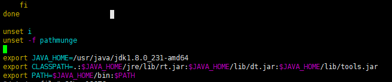

一个Java项目部署上线，在Linux系统上安装jdk是不可缺少的部分。下面将介绍在Linux系统上安装jdk的一种方法（严格来说可分为三种，以后有时间的话会针对剩下的两种方法进行介绍）。一、准备工作
服务器一台：作者使用的阿里云服务器，学生机，一年也就百来块钱，建议自己学的童鞋买一个。（并非广告哦！买腾讯云也是一样的）。二、下载Jdk包
下载的jdk包：jdk-8u231-linux-x64.rpm
下载的地址：[https://www.oracle.com/technetwork/java/javase/downloads/jdk8-downloads-2133151.html](https://www.oracle.com/technetwork/java/javase/downloads/jdk8-downloads-2133151.html)
三、安装jdk
在Linux上新建一个文件夹softwarePag（用于存放安装包）：1 | [root@iz2zefp1ljg8l0rzmthzt6z ~]# mkdir /usr/softwarePag |
利用Xftp工具将下载的jdk包传输到服务器的softwarePag文件夹下：
在该目录下解压安装jdk,默认安装路径/usr/java目录下:1 | [root@iz2zefp1ljg8l0rzmthzt6z softwarePag]# sudo rpm -ivh jdk-8u231-linux-x64.rpm |
四、配置环境变量
编辑profile文件：1 | [root@iz2zefp1ljg8l0rzmthzt6z jdk1.8.0_231-amd64]# vim /etc/profile |
在文件的最下方添加如下配置：1 | export JAVA_HOME=/usr/java/jdk1.8.0_231-amd64 |

点击esc,输入:wq保存配置文件的修改并退出，执行source命令生效：1 | [root@iz2zefp1ljg8l0rzmthzt6z jdk1.8.0_231-amd64]# source /etc/profile |
五、测试安装是否成功
输入java -version:1 | [root@iz2zefp1ljg8l0rzmthzt6z jdk1.8.0_231-amd64]# java -version |
自此，在Linux上安装Jdk已经全部完成了。